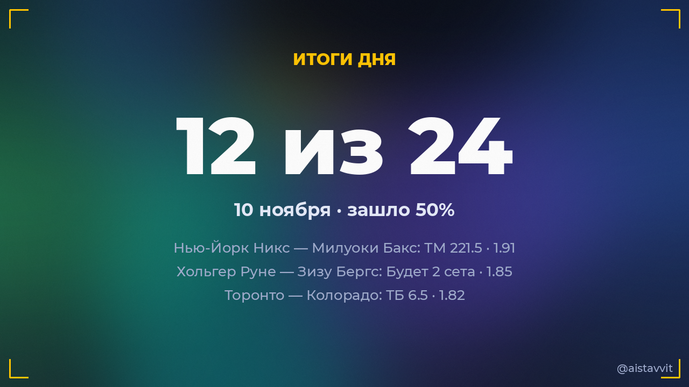

Итоги дня — 10 ноября 2026
Зашло 12 из 24 основных прогнозов (50%), ROI дня -12.9%. Каждый прогноз учтён — и заходы, и промахи.

Все прогнозы дня
🎾 Марта Костюк — Джессика Пегула
Будет 2 сета · 1.750:2 ✅
Будет 2 сета · 1.750:2 ✅
🏀 Нью-Йорк Никс — Милуоки Бакс
ТМ 221.5 · 1.91117:85 ✅
ТМ 221.5 · 1.91117:85 ✅
🎾 Адриан Маннарино — Александр Шевченко
Будет 2 сета · 1.620:2 ✅
Будет 2 сета · 1.620:2 ✅
🎾 Алекс Микельсен — Хуан Мануэль Серундоло
Будет 2 сета · 1.592:0 ✅
Будет 2 сета · 1.592:0 ✅
🎾 Лоренцо Сонего — Кантен Алис
Будет 2 сета · 1.682:0 ✅
Будет 2 сета · 1.682:0 ✅
🎾 Алис Тюбелло — Хулия Риера
Будет 2 сета · 1.812:0 ✅
Будет 2 сета · 1.812:0 ✅
🎾 Кароль Монне — Лейре Ромеро Гормас
Будет 2 сета · 1.782:0 ✅
Будет 2 сета · 1.782:0 ✅
🎾 Хольгер Руне — Зизу Бергс
Будет 2 сета · 1.852:0 ✅
Будет 2 сета · 1.852:0 ✅
🎾 Лоренцо Музетти — Тоби Сэмюэл
Будет 2 сета · 1.532:0 ✅
Будет 2 сета · 1.532:0 ✅
🏀 Филадельфия Сиксерс — Бостон Селтикс
П2 (с ОТ) · 1.81101:123 ✅
П2 (с ОТ) · 1.81101:123 ✅
🎾 Кори Гауфф — Линда Носкова
Будет 2 сета · 1.750:2 ✅
Будет 2 сета · 1.750:2 ✅
🏒 Торонто — Колорадо
ТБ 6.5 · 1.823:6 ✅
ТБ 6.5 · 1.823:6 ✅
🏀 Финикс Санз — Клипперс
ТМ 223.5 · 1.93133:110 ❌
ТМ 223.5 · 1.93133:110 ❌
🏒 Сент-Луис — Детройт
ТБ 5.5 · 1.803:2 ❌
ТБ 5.5 · 1.803:2 ❌
🏒 Коламбус — Флорида
ТБ 5.5 · 1.771:4 ❌
ТБ 5.5 · 1.771:4 ❌
🏒 Монреаль — Миннесота
ТБ 6.5 · 2.051:2 ❌
ТБ 6.5 · 2.051:2 ❌
🏀 Голден Стэйт — Нью-Орлеан Пеликанс
Ф1 (-11.5) · 1.94138:87 ❌
Ф1 (-11.5) · 1.94138:87 ❌
🏒 Оттава — Вашингтон
ТБ 6.5 · 1.982:3 ❌
ТБ 6.5 · 1.982:3 ❌
🏒 Виннипег — Нью-Джерси
ТБ 6.5 · 1.954:2 ❌
ТБ 6.5 · 1.954:2 ❌
🏒 Сан-Хосе — Айлендерс
ТБ 6.5 · 1.983:2 ❌
ТБ 6.5 · 1.983:2 ❌
🎾 Бьянка Андрееску — Ребека Масарова
Будет 2 сета · 1.532:1 ❌
Будет 2 сета · 1.532:1 ❌
🎾 Лючия Бронцетти — Хульета Пареха
Будет 2 сета · 1.822:1 ❌
Будет 2 сета · 1.822:1 ❌
🎾 Артюр Риндеркнеш — Миомир Кецманович
Будет 2 сета · 1.791:2 ❌
Будет 2 сета · 1.791:2 ❌
🏀 Юта Джаз — Майами Хит
ТБ 226.5 · 1.95109:115 ❌
ТБ 226.5 · 1.95109:115 ❌
← предыдущий день · следующий день → · статистика бота · прогнозы на сегодня · Telegram-канал